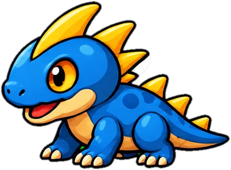

 Fire
FireTap a stage to read its story.
Pyxling is a small blue lizard with yellow-gold dorsal spines running from its forehead to its tail-tip and a plump, round body it carries with casual dignity. Its four sturdy legs are all the same length, giving it a steady low-slung stance, and it regards everything with the calm interest of a creature that has decided it is in charge. In the sand dunes it digs shallow bowls in the warm sand and rests in them throughout the afternoon, spines catching the sunlight. The guardians gave it the family name that means first fire, and it carries this with obvious awareness.
Field note: Pyxling's dorsal spines rattle gently in wind; each spine is tuned to a different frequency, making it a living wind chime.
Sand Dunes. Pyxling and its family are found in the Sand Dunes. See everyone who lives there.
Share a Bond Food that matches its types to become friends. Pyxling loves:
A Bond Food is not a trick. It joins your spirit with the Kimuro's spirit, and only when it chooses you.
Print the Kimuro adventure packs: mazes, cards, a board game and Bond Mark medals.
See the printable packs